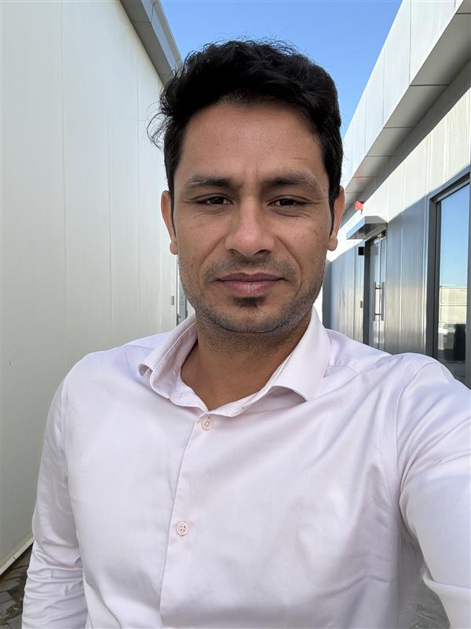

Robotics Researcher
Dubai Electricity and Water Authority (DEWA) – R&D
I completed my PhD at IIT Kanpur, where my research focused on autonomous robotic systems for smart manipulation and real-world interaction. My doctoral thesis is available here.
I currently work as a Robotics Researcher at Dubai Electricity and Water Authority (DEWA) – R&D, developing and deploying field-ready autonomous robotic systems for infrastructure inspection, underground utility mapping, and outdoor robotics applications.
My work focuses on building complete robotics stacks that integrate RTK-GNSS localization, multi-sensor fusion (LiDAR, RGB-D, GPR), 3D perception, and ROS-based autonomy systems, with emphasis on reliability in large-scale unstructured environments.
Outside research, I enjoy spending time in nature and maintaining an active lifestyle. I regularly work out, go running, and play badminton, especially competitive matches that require strategy and endurance.